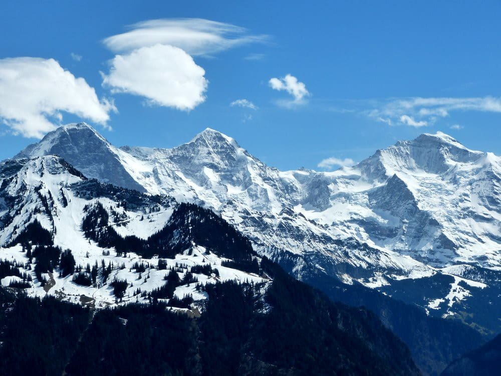
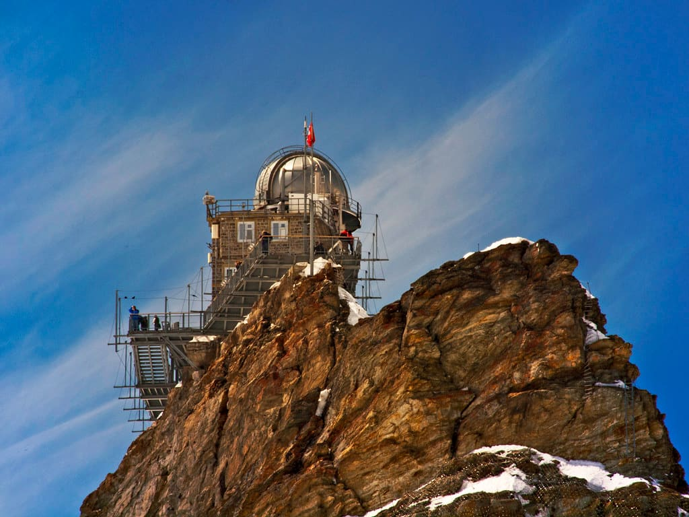
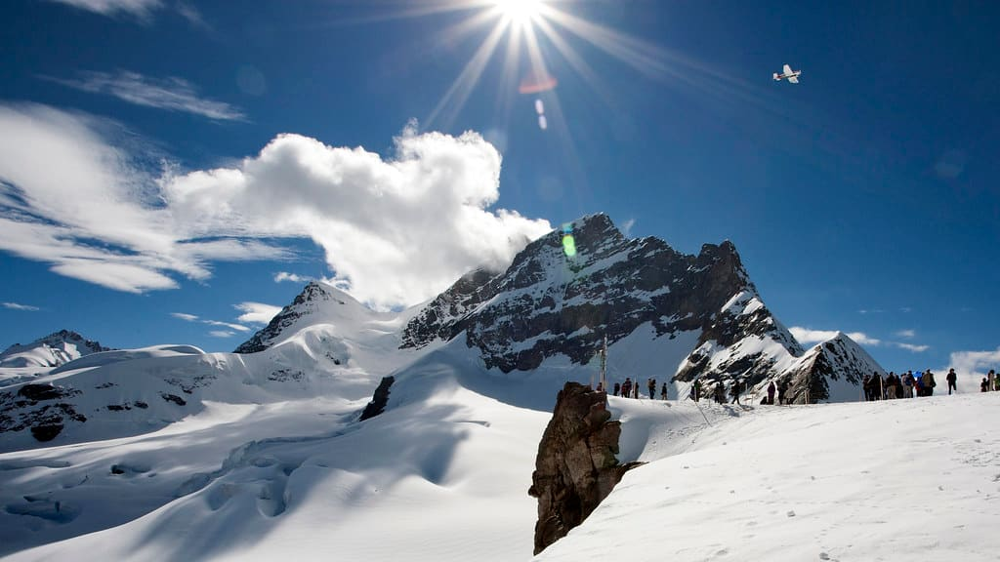
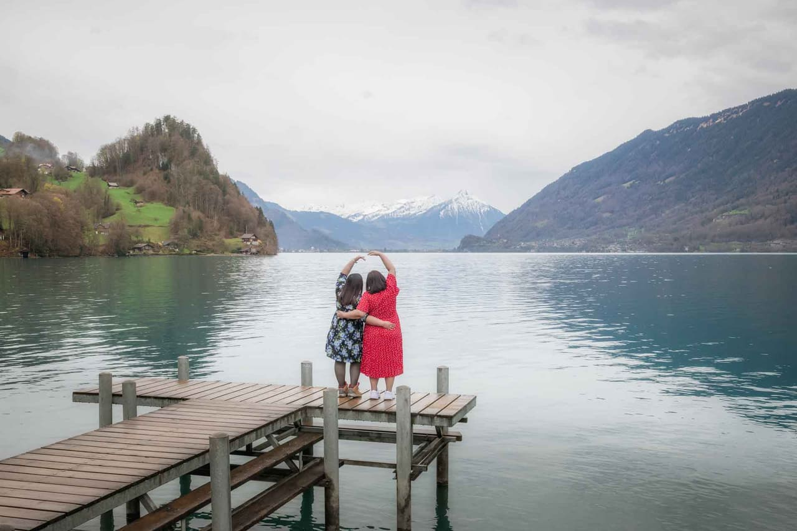
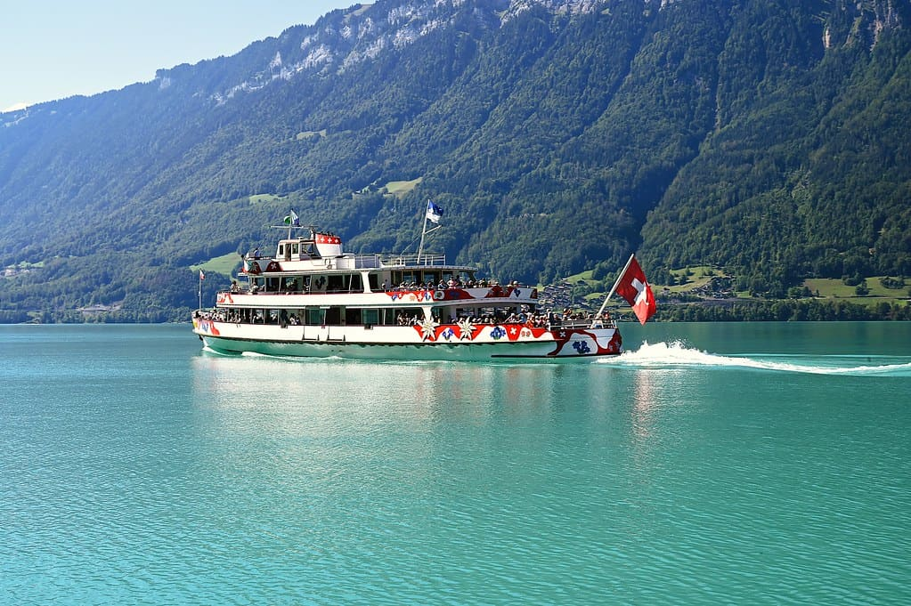

0
Sun - 6/6/2027
Depart Pittsburgh after work
Overnight travel
Airport meals and ground transport
GatewayPIT→gateway→ZRH
Confirm a protected 2027 itinerary
Overnight flight
Build-time Trip Composer
11 nights · 6/6/2027 to 6/19/2027 · estimated 35/50




Estimated scorecard
PTO: 9 days. These axes are deterministic estimates, not audited evidence.
Day by day
Sun - 6/6/2027
Overnight travel
Airport meals and ground transport
Confirm a protected 2027 itinerary
Mon - 6/7/2027
Interlaken soft landing
Est. $150 · train, groceries, easy dinner
No Swiss rental car — the rail network reaches every mountain in this plan. Land, take the scenic train down, and let jet-lagged legs recover before the summit days.
The Höheweg promenade and lakefronts are free. The Harder Kulm funicular is the paid add-on, but its published fare is genuinely inconsistent across sources (roughly CHF 19–51 adult depending on window/pass) — treat it as unknown until you check jungfrau.ch the week you travel. Half-Fare/Swiss Travel Pass takes ~50% off.
Valley floor, ~1,900 ft. June highs about 63°F / lows 47°F, with a high day-to-day rain probability (~57% chance of some rain). A relaxed arrival day is the right use of jet-lagged legs before the mountain days.
Family & picky-kid eats
Tue - 6/8/2027
Waterfall valley + Trümmelbach
Est. $140 · Trümmelbach, lunch, dinner
The classic cliff-walled valley: 72 waterfalls, the Staubbach free-fall, and the Trümmelbach glacier torrents carved inside the mountain. Weather-flexible on purpose.


Staubbach Falls is free from the village. Trümmelbach Falls (the glacier torrents inside the mountain) charges about CHF 18 adult / CHF 8 child 6–15 — roughly CHF 52 (~$58) for the family; under-4s are not permitted for safety. Open early April–early November, ~9am–5pm in June.
Cliff-walled valley, ~2,600 ft. June is green and misty with frequent afternoon showers. Trümmelbach is inside the rock, so it is the smart rainy-morning pick; the open-valley waterfall walks want a drier window.
Family & picky-kid eats
Wed - 6/9/2027
Highest railway in Europe, on the clearest morning
Est. $700 · summit railway, snacks, dinner
The marquee splurge: cog rail to 3,454 m, the Aletsch Glacier, Ice Palace and Sphinx terrace. Near-freezing at the top even in June, and cloud can white it out — so this day floats to the best forecast morning of the block.



The single biggest line item of the whole leg. Plan off the Grindelwald round-trip fare (~CHF 239 adult in summer), with kids 6–15 at about CHF 20–30 (or free with a Swiss Family / Junior card), plus the CHF 10/person May–Oct reservation. Realistic family total: roughly CHF 560–580 (~$630–650). A Swiss Travel Pass gives only 25% off the summit railway — it is not included. Re-verify at jungfraujochtickets.ch before booking; peak fares run dynamic.
3,454 m / near-freezing year-round. Expect roughly 28–36°F at the top even in June, regardless of valley heat — hats, gloves and real jackets. Cloud can white out the Aletsch view entirely, so keep a flex day and go on the clearest morning.
Family & picky-kid eats
Thu - 6/10/2027
Cliff Walk, zipline, mountain carts
Est. $620 · gondola, activities, dinner
The kid-magnet day: the cantilevered First Cliff Walk against the Eiger, then the First Flyer zipline, First Glider and Mountain Carts back down. Swap with Jungfraujoch if today’s summit forecast is the better one.


The single best kid-magnet of the leg. Gondola round-trip runs about CHF 76 adult in peak June (kids reduced; STP/Half-Fare ~50% off). The Cliff Walk is free with any gondola ticket. Add-on rides — First Flyer zipline, First Glider, Mountain Cart, Trottibike — start ~CHF 21 each; an Adventure Package bundling gondola + activities is ~CHF 69–99/person. A full family adventure day lands around CHF 500–600 (~$570–680).
2,168 m. June is roughly 50–59°F up top, windier than the valley, with the usual Alpine afternoon-thunderstorm risk. Ride up in the morning, do the cliff walk and rides before clouds build, and keep rain shells in the pack.
Family & picky-kid eats
Fri - 6/11/2027
Easy ridge view, then turquoise lake
Est. $220 · gondola, boat, dinner
A gentler alpine day: the short Männlichen Royal Walk for the three-peak panorama, then glacier-turquoise Lake Brienz and the Iseltwald pier.


The best value big-view of the leg. Männlichen gondola from Grindelwald Terminal is about CHF 34 adult / ~CHF 17 child return — roughly half the Schynige Platte cog railway (CHF 68 adult). The Royal Walk itself (~2 km, +120 m, ~30 min to the crown platform) is free and genuinely stroller-and-8-year-old friendly.
~2,230 m ridge. Cooler and breezier than the valley; the payoff is a dead-ahead Eiger–Mönch–Jungfrau wall from an easy, short walk. A good half-day to pair with the Lake Brienz afternoon.
Family & picky-kid eats



The turquoise-lake day. A BLS lake boat runs its full schedule from late May; a one-way Interlaken Ost–Brienz seat is ~CHF 39 adult (kids reduced; free with pass). The famous Iseltwald wooden pier now has a turnstile with a ~CHF 5 entry to control crowds. The Giessbach funicular is likely bundled into a BLS combo ticket — confirm that fare before counting on it.
Glacier-fed, ~57–64°F in June. The vivid turquoise comes from glacial rock flour — but this is a look-don’t-swim lake in June; kids can wade, full swimming waits for the Crete leg. Official swim season is really July–August.
Family & picky-kid eats
Sat - 6/12/2027
Flight transfer
Transfer included in switzerland->sicily budget
Check out, complete the air transfer, collect the next car if needed, and keep the first evening light.
Sun - 6/13/2027
Water-heavy, low-cost day
Est. ~$190 · La Rocca + beach set/food
Make this the first full warm-water day: hike La Rocca while it is cool, then leave a long afternoon for the beach and an old-town dinner.


Beach/old town are free. La Rocca urban park is currently EUR5 full / EUR2.50 reduced ages 6-14; family estimate about EUR15.
Mid-June: warm coastal days, often upper 70s to low 80s F. Sea commonly runs about 72-75 F by mid/late June.
Family & picky-kid eats
Mon - 6/14/2027
Town/food with swim backup
Est. ~$260 · rail/parking + chapel option + meals
Palermo gives Sicily its city texture, but the day stays flexible because kids may prefer Mondello after two hot hours in town.


Street wandering is free. Palazzo dei Normanni / Palatine Chapel official current adult tickets vary by day/access; plan roughly EUR15.50-EUR19.50 adult and check the exact calendar.
June: Palermo is hotter and less breezy than Cefalù. Do culture early, then use Mondello for afternoon water if the city gets heavy.
Family & picky-kid eats
Tue - 6/15/2027
Nature + recovery swim
Est. ~$170-$420 · depends on cable car
Etna is the nature pillar, not an automatic expensive summit day. Check visibility and volcanic conditions before buying anything above the free crater walks.


Free Silvestri craters are the budget plan. Cable-car-only prices have been reported around EUR50 adult / EUR30 kids 5-10; 4x4/guided higher-slope options can push a family toward EUR250-EUR320.
Mountain day: cooler and windier than the coast. Visibility drives value; do not buy expensive summit options if clouds/ash are poor.
Family & picky-kid eats
Wed - 6/16/2027
Last full beach day
Est. ~$250 · beach set/boat + final dinner
End with water, not another town checklist. The whole point of handing swimming to Sicily was a real Mediterranean beach finish.


Ancient Theatre official current fare: EUR14 full / EUR7 reduced. Isola Bella beach is free; beach sets/boat extras vary.
Mid/late June: warm to hot, with Ionian water around 72-75 F.
Family & picky-kid eats
Thu - 6/17/2027
Weather and energy buffer
Flexible
Keep this day open for weather, rest, or a favorite Sicily repeat.
Fri - 6/18/2027
Return flight
Airport meals and transfers
Confirm protected transatlantic itinerary
Sat - 6/19/2027
Trip complete
—
Keep the next full day protected in Pittsburgh.
Route map
Destination and gateway points inherited from the source legs.
Estimated budget
| Switzerland lodging | $1200–$1900 |
|---|---|
| Switzerland car/local transport | $120–$360 |
| Switzerland food | $1020–$1380 |
| Switzerland activities | $900–$1500 |
| Mid-trip transfer | $900–$1460 |
| Sicily lodging | $1176–$1650 |
| Sicily car/local transport | $539–$763 |
| Sicily food | $1225–$1428 |
| Sicily activities | $300–$650 |
| PIT outbound gateway | $2800–$4200 |
| PIT return gateway | $3000–$4000 |
Transfer watch
Confirm the exact 2027 operating day and prefer a protected itinerary where available.